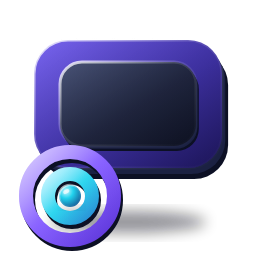

Cast your screen
Your display on the TV, securely, over your own network.
SourceEntire screenPrimary display
VideoAutomaticConfigured
AudioOpus stereoConfigured
SecurityAES-256-GCMNegotiated
Bitrate—Measured
Devices
TVs found on your network and the ones you’ve paired.
Available
Paired
Streaming
Not streaming

You’re not streaming
Pick a TV and start streaming from Cast. Live details will appear here.
——
Bitrate (measured)—
| Setting | Value | Type |
|---|---|---|
| Resolution & frame rate | — | Negotiated |
| Codec | H.264 (NVIDIA NVENC) | Negotiated |
| Capture rate | — | Measured |
| Sending | — | Measured |
| Dropped frames | — | Measured |
| End-to-end latency | Not measured | Unavailable |
Settings
Defaults work for most setups. Changes apply the next time you start streaming.
Video
ResolutionAutomatic follows what your TV supports and never upscales.
Frame rate60 fps needs a strong link. Ethernet or 5 GHz Wi-Fi on the TV is recommended.
BitrateHigher is sharper but needs more bandwidth. Automatic adapts to the link.
Mouse pointerDraw the cursor into the stream.
Audio
Stream system audioOpus stereo, sent with the picture.
Play sound on the TV onlyMutes this PC’s speakers while streaming and restores them when you stop.
Network
Reconnect automaticallyResume after a Wi-Fi drop or a TV restart.
ConnectionDirect to your TV on the local network. No cloud, no relay.
—Security
EncryptionVideo and audio are encrypted end to end with AES-256-GCM.
Always onPaired TVsManage which TVs your PC trusts.
Advanced
Video encoderHardware H.264 on your NVIDIA GPU.
NVENC · h264_nvencRun a full system check in .
Logs
Stored on this PC only. Keys and pairing codes are never written here.
About
AirScreen · protocol v · Deadserpent Corporation
Diagnostics
Running checks…
Privacy
No account, no cloud, no telemetry. Your screen and audio stay on your local network, encrypted. A TV is trusted only after you approve it with a one-time code.
© 2026 Deadserpent Corporation. All rights reserved.